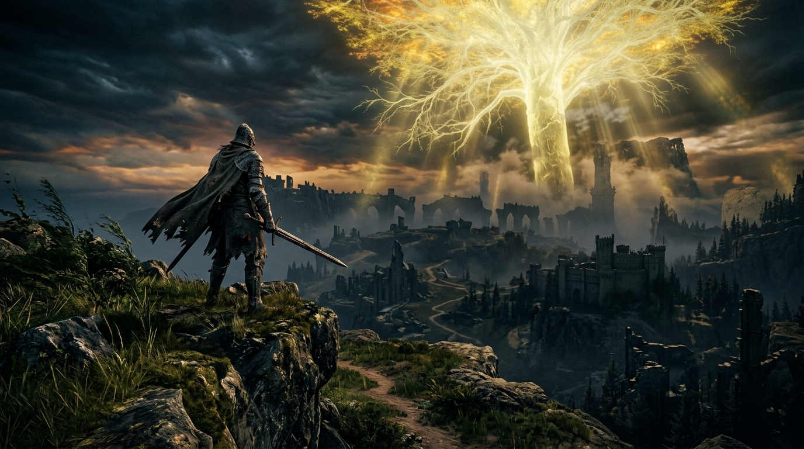

Chapter 2: The Duel of the Storm Lord

The southern skies of the Lands Between were not golden. They were bruised purple and black, churned by eternal gales that screamed over the cliffs of Limgrave.
Here perched Stormveil, the fortress of the ancient Storm Lord. It was an aerie where hawk-knights rode the tempest and war was waged with the shrieking fury of hurricanes. When Marika's envoys demanded fealty, their severed heads were returned upon the backs of stormwinds.
The Golden Lineage had encountered its first true wall.
Lord Godfrey marched south with a legion of crucible knights, their brass armor glinting beneath the dim sun. But as they reached the perimeter where trees were bent double by the violent draft, the First Elden Lord raised his hand.
“Halt,” Godfrey commanded.
His captains looked on in bewilderment as the Lord took off his ceremonial royal cape, letting it fall into the heather. He did not order an encirclement. He did not order siege engines to batter the weathered ramparts.
“This storm was not made for an army,” Godfrey rumbled, the lion Serosh breathing heavy plumes of vapor over his shoulder. “It was made for me.”
Alone, Godfrey strode into the heart of the gale.
The tempest tore at his white beard and hammered against his breastplate, yet with every stride, his iron greataxe carved through the howling air. From the parapets of Stormveil descended the Storm Lord—a towering warlord enveloped in lightning, wielding blades that danced like gale-force winds.
The battle shook the cliffs to their very roots. The Storm Lord struck a hundred times in the span of a single breath, his gusts shearing stone from the castle towers. Yet Godfrey stood like the mountain itself. With each swing of his colossal axe, the wind itself was torn asunder.
In the climax of the duel, the Storm Lord brought down a cyclone of crackling storm-steel. Godfrey met the strike directly with the center of his axe blade.
A sound like thunder erupted across Limgrave. The blade of Godfrey's golden axe snapped with a violent crack—yet the blow did not waver. With the shattered remnant of his weapon, Godfrey drove the blunt edge through the heart of the tempest, striking down the Storm Lord and banishing the eternal gale forever.
“Godfrey's greataxe was broken in battle, yet he never had it reforged. To him, the broken blade was the true symbol of strength.”
When the Crucible Knights finally crested the hill, they found Godfrey standing silent amidst the settling mist. The storm was broken; the skies had parted to reveal the faint, warm glow of the Erdtree to the north.
Godfrey looked down at his broken axe, running his thumb along the jagged iron. A faint smile touched his lips.
“Stormveil is ours,” he said quietly. “Now, we turn our gaze to the fire.”